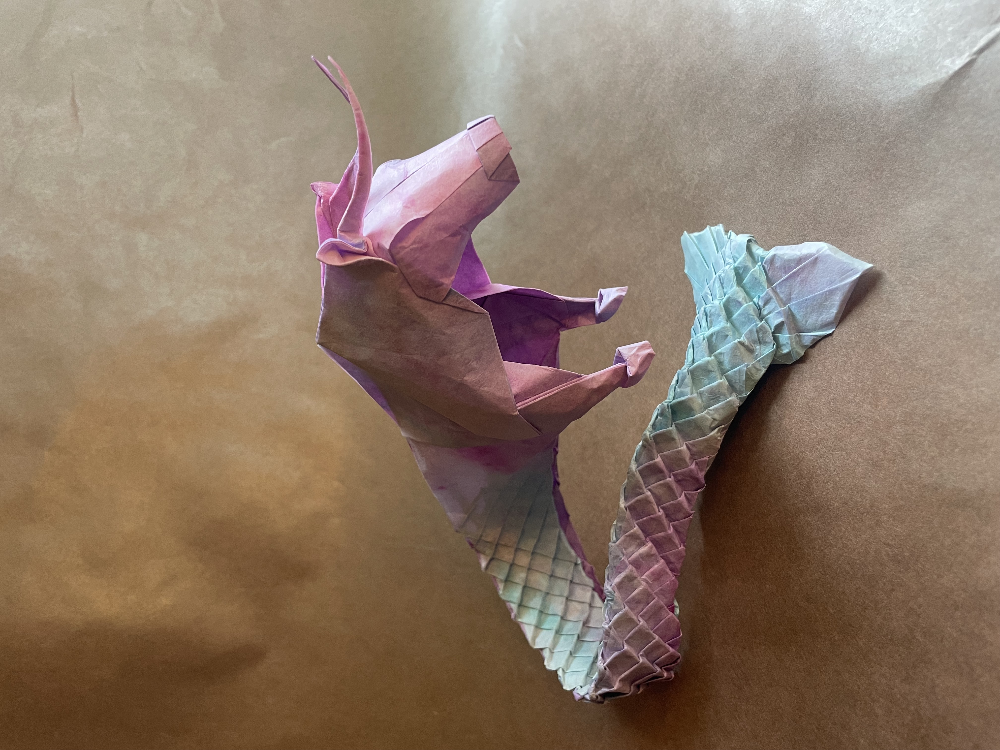
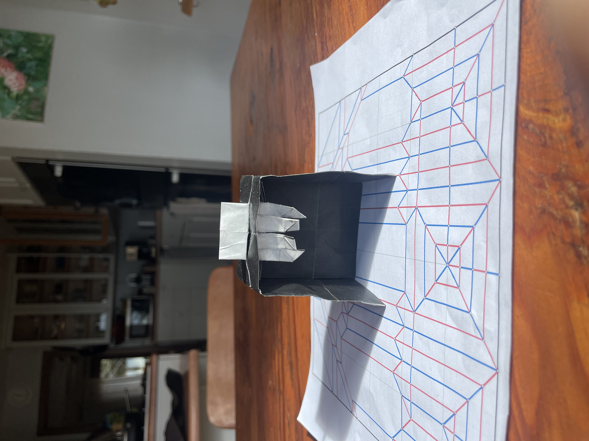
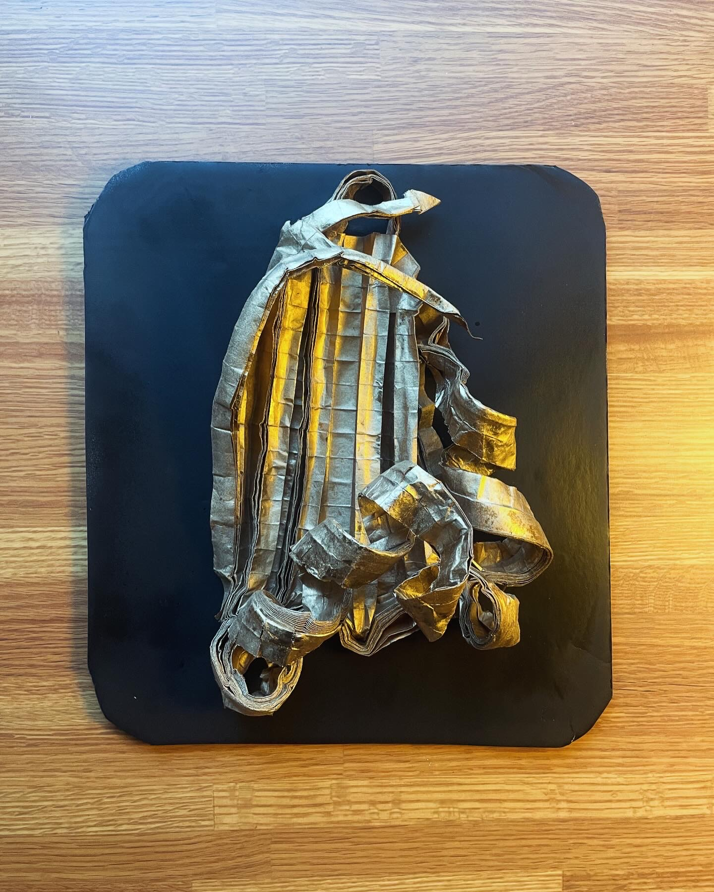
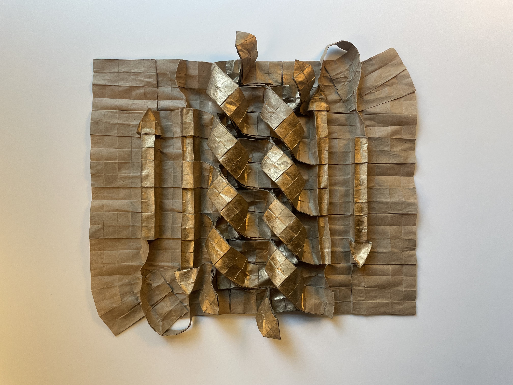
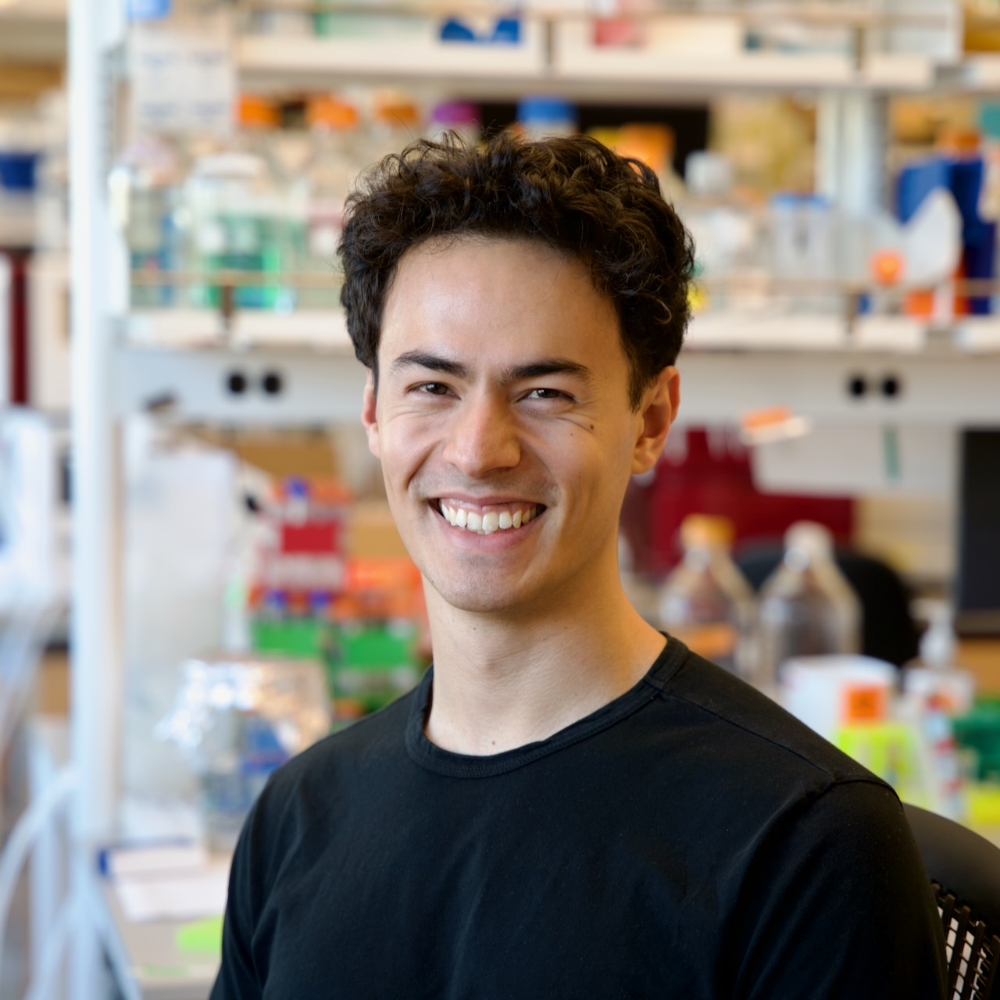

Origami
In my free time, I enjoy designing and folding origami models. You can see some of my folds and designs below, and the rest of my work on my Instagram Page.





I'm a research scientist interested in the intersection of machine learning and structural biology, and in particular in applications in drug discovery. I currently work at Vilya.
I did my PhD at the Institute for Protein Design, supervised by David Baker, and have worked on a variety of deep learning methods for ligand docking and virtual screening. You can find my full resume here.
In my free time, I enjoy designing and folding origami models. You can see some of my folds and designs below, and the rest of my work on my Instagram Page.



